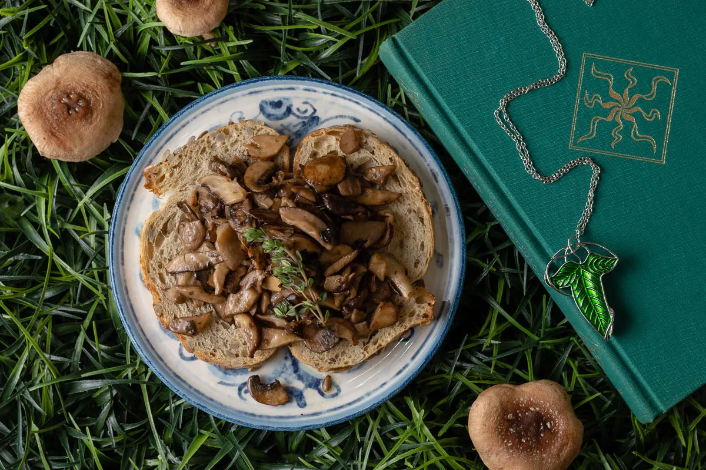

The Magic of Mushrooms
Tolkien’s love of mushrooms made them an obvious choice. What is great about this recipe is that not only are they good on toast, but can also be used on meat or as a side!
Ingredients
- 1 package Fresh Mixed Mushrooms
- 1 tbsp Olive Oil
- 1/8 cup Dry Sherry
- 1 tbsp Butter
- 1 sprig of Thyme
- 2 slices Whole Grain Toast
Steps
- Heat olive oil in a skillet.
- Saute mushrooms until are mostly soft.
- De-glaze the pan with the sherry.
- Add butter and thyme after the sherry is almost completely reduced.
- Remove thyme and serve on toast.
Return to top
Return to main page